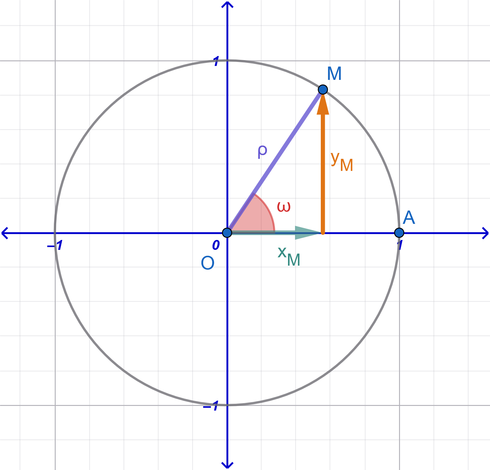

0.1 Βασικές Τριγωνομετρικές Ταυτότητες
0.1.1 \(ημ^2ω + συν^2ω = 1\)
Ταυτότητα 1
\(ημ^2ω + συν^2ω = 1\)
Απόδειξη:

Θεωρούμε ορθοκανονικό σύστημα συντεταγμένων και τον τριγωνομετρικό κύκλο με ακτίνα \(\rho = 1\).
Έστω \(M(x, y)\) το σημείο τομής της τελικής πλευράς της γωνίας \(\omega\) με τον τριγωνομετρικό κύκλο.
Από τους ορισμούς των τριγωνομετρικών αριθμών στον τριγωνομετρικό κύκλο, ισχύει: \[x = συνω \quad \text{και} \quad y = ημω\]
Επειδή το σημείο \(M(x, y)\) ανήκει στον κύκλο κέντρου \(O(0,0)\) και ακτίνας \(R = 1\), η απόστασή του από την αρχή των αξόνων είναι \((OM) = 1\). Από το Πυθαγόρειο Θεώρημα ισχύει ότι: \[x^2 + y^2 = 1\]
Αντικαθιστώντας \(x = συνω\) και \(y = ημω\), προκύπτει: \[συν^2ω + ημ^2ω = 1 \iff \mathbf{ημ^2ω + συν^2ω = 1}\]
0.1.2 \(εφω = \dfrac{ημω}{συνω}\) και \(σφω = \dfrac{συνω}{ημω}\)
Ταυτότητα 2
\(εφω = \dfrac{ημω}{συνω}\) και \(σφω = \dfrac{συνω}{ημω}\)
Απόδειξη:
Από τους ορισμούς των τριγωνομετρικών αριθμών στο σύστημα συντεταγμένων, για ένα σημείο \(M(x, y)\) της τελικής πλευράς της γωνίας \(\omega\) στον τριγωνομετρικό κύκλο, έχουμε \(x = συνω\) και \(y = ημω\).
Για την εφαπτομένη (\(εφω\)), με την προϋπόθεση ότι \(x = συνω \neq 0\) (δηλαδή \(\omega \neq k\pi + \dfrac{\pi}{2}, k \in \mathbb{Z}\)), ορίζεται ως: \[εφω = \frac{y}{x} = \mathbf{\frac{ημω}{συνω}}\]
Για τη συνεφαπτομένη (\(σφω\)), με την προϋπόθεση ότι \(y = ημω \neq 0\) (δηλαδή \(\omega \neq k\pi, k \in \mathbb{Z}\)), ορίζεται ως: \[σφω = \frac{x}{y} = \mathbf{\frac{συνω}{ημω}}\]
0.1.3 \(εφω \cdot σφω = 1\)
Ταυτότητα 3
\(εφω \cdot σφω = 1\)
Απόδειξη:
Για κάθε γωνία \(\omega\) για την οποία ορίζονται ταυτόχρονα η εφαπτομένη και η συνεφαπτομένη (δηλαδή με \(συνω \neq 0\) και \(ημω \neq 0\)), αντικαθιστούμε τους τύπους των \(εφω\) και \(σφω\): \[εφω \cdot σφω = \frac{ημω}{συνω} \cdot \frac{συνω}{ημω} = \frac{\cancel{ημω} \cdot \cancel{συνω}}{\cancel{συνω} \cdot \cancel{ημω}} = \mathbf{1}\]
0.1.4 \(συν^2ω = \dfrac{1}{1 + εφ^2ω}\) και \(ημ^2ω = \dfrac{εφ^2ω}{1 + εφ^2ω}\)
Ταυτότητα 4
\(συν^2ω = \dfrac{1}{1 + εφ^2ω}\) και \(ημ^2ω = \dfrac{εφ^2ω}{1 + εφ^2ω}\)
Απόδειξη:
- Θεωρούμε τη θεμελιώδη ταυτότητα \(ημ^2ω + συν^2ω = 1\).
Διαιρούμε και τα δύο μέλη με \(συν^2ω \neq 0\): \[\frac{ημ^2ω}{συν^2ω} + \frac{συν^2ω}{συν^2ω} = \frac{1}{συν^2ω} \iff \left(\frac{ημω}{συνω}\right)^2 + 1 = \frac{1}{συν^2ω} \iff εφ^2ω + 1 = \frac{1}{συν^2ω}\]
Αντιστρέφοντας τα δύο μέλη, λαμβάνουμε: \[\mathbf{συν^2ω = \frac{1}{1 + εφ^2ω}}\]
- Αντικαθιστούμε την έκφραση του \(συν^2ω\) στη θεμελιώδη ισότητα \(ημ^2ω + συν^2ω = 1\): \[ημ^2ω + \frac{1}{1 + εφ^2ω} = 1 \iff ημ^2ω = 1 - \frac{1}{1 + εφ^2ω} \iff ημ^2ω = \frac{1 + εφ^2ω - 1}{1 + εφ^2ω}\]
Άρα προκύπτει: \[\mathbf{ημ^2ω = \frac{εφ^2ω}{1 + εφ^2ω}}\]
0.1.5 Ασκήσεις και Προβλήματα Εμπέδωσης
0.1.5.1 Κατηγορία Α: Υπολογισμός Τριγωνομετρικών Αριθμών
Αν \(ημω = \dfrac{3}{5}\) και \(\dfrac{\pi}{2} < \omega < \pi\) (2ο τεταρτημόριο), να υπολογιστούν οι υπόλοιποι τριγωνομετρικοί αριθμοί της γωνίας \(\omega\).
Αν \(συνω = -\dfrac{12}{13}\) και \(\pi < \omega < \dfrac{3\pi}{2}\) (3ο τεταρτημόριο), να υπολογιστούν τα \(ημω, εφω, σφω\).
Αν \(εφω = -\dfrac{3}{4}\) και \(\dfrac{3\pi}{2} < \omega < 2\pi\) (4ο τεταρτημόριο), να υπολογιστούν τα \(συνω\) και \(ημω\) με χρήση των τύπων \(συν^2ω = \dfrac{1}{1+εφ^2ω}\) και \(ημ^2ω = \dfrac{εφ^2ω}{1+εφ^2ω}\).
Αν \(σφω = \sqrt{3}\) και \(\pi < \omega < \dfrac{3\pi}{2}\), να υπολογιστούν οι τιμές των \(εφω, συνω, ημω\).
Αν \(συνω = \dfrac{4}{5}\) και \(0 < \omega < \dfrac{\pi}{2}\), να υπολογιστεί η τιμή της παράστασης \(P = \dfrac{5ημω - 3εφω}{4σφω + 1}\).
0.1.5.2 Κατηγορία Β: Αποδείξεις Τριγωνομετρικών Ταυτοτήτων
- Να αποδειχθεί ότι: \[ ημ^4 ω - συν^4 ω = \begin{cases} ημ^2ω - συν^2ω \\ 2ημ^2ω - 1 \\ 1-2συν^2ω \\ \end{cases} \].
Υπόδειξη - Λύση
\(ημ^4ω-σν^4ω=\overset{\text{διαφορά τετραγώνων}}{(ημ^2ω)^2-(συν^2ω)^2}= (ημ^2ω-συν^2ω)(......... + ......... )=\)
- Να αποδειχθεί ότι: \(ημ^4ω + συν^4ω = 1 - 2ημ^2ω \cdot συν^2ω\).
Υπόδειξη - Λύση
Ισχύει ότι: \(ημ^2ω+συν^2ω=1 \implies (ημ^2ω+συν^2ω)^2\overset{\text{υψώνουμε και τα μέλη στο τετράγωνο}}{=}1^2 \implies\\ ημ^4ω+συν^4ω+2ημ^2ωσυν^2ω=1 \implies .............\)
Να αποδειχθεί ότι: \((ημω + συνω)^2 + (ημω - συνω)^2 = 2\).
Να αποδειχθεί ότι: \(\dfrac{ημω}{1 + συνω} + \dfrac{1 + συνω}{ημω} = \dfrac{2}{ημω}\) (για \(ημω \neq 0\) και \(συνω \neq -1\)).
Υπόδειξη - Λύση
\(\dfrac{ημω}{1 + συνω} + \dfrac{1 + συνω}{ημω} \overset{\text{κάνουμε τα κλάσματα ομώνυμα}}{=} \dfrac{ημω\cdotημω}{(1 + συνω)ημω} + \dfrac{(1 + συνω)(1+συνω)}{(1+συνω)ημω}=\\ \dfrac{ημ^2ω+}{1 + συνω)ημω} + \dfrac{1^2 + 2συνω+συν^2ω}{(1+συνω)ημω}=\dfrac{2 + 2συνω}{(1+συνω)ημω}= .............\)
- Να αποδειχθεί ότι: \(\dfrac{εφω + σφω}{\dfrac{1}{συνω}} = \dfrac{1}{ημω}\).
Υπόδειξη - Λύση
\(\dfrac{εφω + σφω}{\dfrac{1}{συνω}} = \dfrac{1}{ημω} \Longleftrightarrow εφω+σφω=\dfrac{1}{ημωσυνω} \ \ \ \ (1)\)
Αρκεί να αποδείξουμε την (1)
\(εφω+σφω=\dfrac{ημω}{συνω}+\dfrac{συνω}{ημω} \overset{\text{τα κάνουμε ομώνυμα}}{=} \dfrac{ημωημω}{συνωημω}+\dfrac{συνωσυνω}{ημωσυνω}=\dfrac{ημ^2ω}{συνωημω}+\dfrac{συν^2ω}{ημωσυνω}=\\ \\ .........................................\)
- Να αποδειχθεί ότι: \((1 - ημω)(1 + ημω)(1 + εφ^2ω) = 1\).
Υπόδειξη - Λύση
\(\overset{\text{διαφορά τετραγώνων}}{(1 - ημω)(1 + ημω)}\overset{\text{από την }συν^2ω=\dfrac{1}{1+εφ^2ω}}{(1 + εφ^2ω)} = (1-ημ^2ω)\left(\dfrac{1}{συν^2ω}\right)=.................\)
- Να αποδειχθεί ότι: \(\dfrac{εφ^2ω - 1}{εφ^2ω + 1} = ημ^2ω - συν^2ω\).
0.1.5.3 Κατηγορία Γ: Απλοποίηση Παραστάσεων & Σταθερές Τιμές
Να απλοποιηθεί η παράσταση: \(A = (ημω + συνω)^2 - 2ημωσυνω\).
Να δειχθεί ότι η παράσταση \(B = συν^2ω \cdot (1 + εφ^2ω) + ημ^2ω \cdot (1 + \sigma\phi^2\omega)\) έχει σταθερή τιμή ανεξάρτητη του \(\omega\).
Να απλοποιηθεί η παράσταση: \(\Gamma = \dfrac{1}{1 + εφ^2ω} + \dfrac{1}{1 + \sigma\phi^2\omega}\).
Υπόδειξη - Λύση
\(Γ=\dfrac{1}{1 + \dfrac{συν^2ω}{ημ^2ω}} +\dfrac{1}{1 + \dfrac{ημ^2x}{συν^2ω}}=\dfrac{1}{ \dfrac{ημ^2ω+συν^2ω}{ημ^2ω}} +\dfrac{1}{\dfrac{συν^2ω+ημ^2ω}{συν^2ω}}= \\ \dfrac{1}{ \dfrac{1}{ημ^2ω}} +\dfrac{1}{\dfrac{1}{συν^2ω}}= .................................. =1\)
- Εκφώνηση
Να απλοποιήσετε τις παρακάτω παραστάσεις:
- \(\epsilon\phi^2 \theta \cdot \sigma\upsilon\nu^2 \theta\)
- \(\dfrac{1}{\sigma\upsilon\nu^2 \theta} - \epsilon\phi^2 \theta\)
(με την προϋπόθεση ότι \(\sigma\upsilon\nu \theta \neq 0\))
Λύση
1. Για την παράσταση \(\epsilon\phi^2 \theta \cdot \sigma\upsilon\nu^2 \theta\)
Γνωρίζουμε από τον ορισμό της εφαπτομένης ότι: \[\epsilon\phi \theta = \frac{\eta\mu \theta}{\sigma\upsilon\nu \theta} \implies \epsilon\phi^2 \theta = \frac{\eta\mu^2 \theta}{\sigma\upsilon\nu^2 \theta}\]
Αντικαθιστούμε στην παράσταση: \[\epsilon\phi^2 \theta \cdot \sigma\upsilon\nu^2 \theta = \frac{\eta\mu^2 \theta}{\sigma\upsilon\nu^2 \theta} \cdot \sigma\upsilon\nu^2 \theta\]
Απλοποιούμε τον όρο \(\sigma\upsilon\nu^2 \theta\): \[= \eta\mu^2 \theta\]
2. Για την παράσταση \(\dfrac{1}{\sigma\upsilon\nu^2 \theta} - \epsilon\phi^2 \theta\)
Αντικαθιστούμε την \(\epsilon\phi^2 \theta = \dfrac{\eta\mu^2 \theta}{\sigma\upsilon\nu^2 \theta}\): \[\frac{1}{\sigma\upsilon\nu^2 \theta} - \epsilon\phi^2 \theta = \frac{1}{\sigma\upsilon\nu^2 \theta} - \frac{\eta\mu^2 \theta}{\sigma\upsilon\nu^2 \theta}\]
Επειδή τα κλάσματα είναι ομώνυμα, τα γράφουμε σε ένα κοινό κλάσμα: \[= \frac{1 - \eta\mu^2 \theta}{\sigma\upsilon\nu^2 \theta}\]
Από τη βασική τριγωνομετρική ταυτότητα \(\eta\mu^2 \theta + \sigma\upsilon\nu^2 \theta = 1\), έχουμε: \[1 - \eta\mu^2 \theta = \sigma\upsilon\nu^2 \theta\]
Επομένως: \[= \frac{\sigma\upsilon\nu^2 \theta}{\sigma\upsilon\nu^2 \theta} = 1\]
0.1.5.4 Κατηγορία Δ: Σύνθετα Προβλήματα & Εφαρμογές
Αν \(ημω + συνω = \dfrac{7}{5}\):
α) Να υπολογιστεί το γινόμενο \(ημω \cdot συνω\).
β) Να υπολογιστεί το άθροισμα \(εφω + σφω\).
(α) Υψώστε και τα δύο μέλη στο τετράγωνο και στη συνέχεια αναπτύξτε ………..
(β) \(εφω+σφω=\dfrac{ημω}{συνω}+\dfrac{συνω}{ημω}=\dfrac{ημ^2ω+συν^2ω}{ημωσυνω}= ...................\)
Αν \(εφω + σφω = 3 \ \ \ \ \ \ (1)\):
α) Να υπολογιστεί η τιμή της παράστασης \(εφ^2ω + σφ^2ω\).
β) Να υπολογιστεί η τιμή της παράστασης \(|εφω - σφω|\).
(α) Υψώστε την (1) στο τετράγωνο
(β) Κάντε το ίδιο και χρησιμοποιήστε και το αποτέλεσμα του (α)
- Να εξεταστεί αν υπάρχει πραγματική γωνία \(\omega\) για την οποία ισχύει \(ημω = x + \dfrac{1}{x}\), όπου \(x\) είναι ένας μη μηδενικός πραγματικός αριθμός.
Επειδή \(-1\le x \le 1 \implies -1\le x + \dfrac{1}{x} \le 1 \implies ...........................\)
- Εκφώνηση
Να αποδειχθεί ότι για κάθε γωνία \(\omega\) ισχύει η ανισότητα: \[-\sqrt{2} \le ημω + συνω \le \sqrt{2}\]
Λύση
Θέλουμε να αποδείξουμε ότι για κάθε γωνία \(\omega\) ισχύει: \[-\sqrt{2} \le \eta\mu\omega + \sigma\upsilon\nu\omega \le \sqrt{2}\]
Η ανισότητα αυτή είναι ισοδύναμη με: \[|\eta\mu\omega + \sigma\upsilon\nu\omega| \le \sqrt{2}\]
Επειδή και τα δύο μέλη είναι μη αρνητικά, υψώνουμε στο τετράγωνο: \[(\eta\mu\omega + \sigma\upsilon\nu\omega)^2 \le (\sqrt{2})^2\]
Αναπτύσσουμε την ταυτότητα στο αριστερό μέλος: \[\eta\mu^2\omega + 2\eta\mu\omega\sigma\upsilon\nu\omega + \sigma\upsilon\nu^2\omega \le 2\]
Χρησιμοποιούμε τη βασική τριγωνομετρική ταυτότητα \(\eta\mu^2\omega + \sigma\upsilon\nu^2\omega = 1\): \[1 + 2\eta\mu\omega\sigma\upsilon\nu\omega \le 2\]
Αφαιρούμε το \(1\) και από τα δύο μέλη: \[2\eta\mu\omega\sigma\upsilon\nu\omega \le 1\] \[1 - 2\eta\mu\omega\sigma\upsilon\nu\omega \ge 0\]
Αντικαθιστώντας ξανά το \(1\) με \(\eta\mu^2\omega + \sigma\upsilon\nu^2\omega\), έχουμε: \[(\eta\mu^2\omega + \sigma\upsilon\nu^2\omega) - 2\eta\mu\omega\sigma\upsilon\nu\omega \ge 0\] \[(\eta\mu\omega - \sigma\upsilon\nu\omega)^2 \ge 0\]
Το οποίο ισχύει πάντοτε, καθώς το τετράγωνο οποιουδήποτε πραγματικού αριθμού είναι μεγαλύτερο ή ίσο του μηδενός.
Επομένως, αντιστρέφοντας τα βήματα, ισχύει: \[-\sqrt{2} \le \eta\mu\omega + \sigma\upsilon\nu\omega \le \sqrt{2}\]
Εναλλακτική Μέθοδος (με μετασχηματισμό σε ένα ημίτονο)
Πολλαπλασιάζουμε και διαιρούμε την παράσταση με το \(\sqrt{2}\): \[\eta\mu\omega + \sigma\upsilon\nu\omega = \sqrt{2}\left(\frac{\sqrt{2}}{2}\eta\mu\omega + \frac{\sqrt{2}}{2}\sigma\upsilon\nu\omega\right)\]
Επειδή \(\sigma\upsilon\nu\left(\dfrac{\pi}{4}\right) = \dfrac{\sqrt{2}}{2}\) και \(\eta\mu\left(\dfrac{\pi}{4}\right) = \dfrac{\sqrt{2}}{2}\), έχουμε: \[\eta\mu\omega + \sigma\upsilon\nu\omega = \sqrt{2}\left(\eta\mu\omega\cdot\sigma\upsilon\nu\frac{\pi}{4} + \sigma\upsilon\nu\omega\cdot\eta\mu\frac{\pi}{4}\right) = \sqrt{2}\,\eta\mu\left(\omega + \frac{\pi}{4}\right)\]
Την τελευταία ισότητα θα την μάθουμε στη συνέχεια
Γνωρίζουμε ότι για κάθε γωνία ισχύει: \[-1 \le \eta\mu\left(\omega + \frac{\pi}{4}\right) \le 1\]
Πολλαπλασιάζοντας όλα τα μέλη με \(\sqrt{2} > 0\): \[-\sqrt{2} \le \sqrt{2}\,\eta\mu\left(\omega + \frac{\pi}{4}\right) \le \sqrt{2}\] \[-\sqrt{2} \le \eta\mu\omega + \sigma\upsilon\nu\omega \le \sqrt{2}\]
0.1.6 🏋️♂️ Ομάδα 1: Προχωρημένες Αποδείξεις & Αλγεβρικές Ταυτότητες
Άσκηση 1
Να αποδειχθεί ότι για κάθε γωνία \(\alpha\) για την οποία ορίζεται η εφαπτομένη ισχύει η ισότητα: \[\epsilon\phi^2\alpha - \eta\mu^2\alpha = \epsilon\phi^2\alpha \cdot \eta\mu^2\alpha\]
Αναλυτική Λύση:
Ξεκινάμε από το αριστερό μέλος και εκφράζουμε την εφαπτομένη ως προς ημίτονο και συνημίτονο: \[\epsilon\phi^2\alpha - \eta\mu^2\alpha = \frac{\eta\mu^2\alpha}{\sigma\upsilon\nu^2\alpha} - \eta\mu^2\alpha\]
Βγάζουμε κοινό παράγοντα το \(\eta\mu^2\alpha\): \[= \eta\mu^2\alpha \cdot \left( \frac{1}{\sigma\upsilon\nu^2\alpha} - 1 \right) = \eta\mu^2\alpha \cdot \left( \frac{1 - \sigma\upsilon\nu^2\alpha}{\sigma\upsilon\nu^2\alpha} \right)\]
Χρησιμοποιώντας τη θεμελιώδη ταυτότητα \(1 - \sigma\upsilon\nu^2\alpha = \eta\mu^2\alpha\): \[= \eta\mu^2\alpha \cdot \frac{\eta\mu^2\alpha}{\sigma\upsilon\nu^2\alpha} = \eta\mu^2\alpha \cdot \epsilon\phi^2\alpha = \epsilon\phi^2\alpha \cdot \eta\mu^2\alpha\]
Άσκηση 2
Να αποδειχθεί ότι: \[\frac{\sigma\upsilon\nu^4\alpha - \eta\mu^4\alpha}{\sigma\upsilon\nu^2\alpha} = 1 - \epsilon\phi^2\alpha\]
Αναλυτική Λύση:
Παραγοντοποιούμε τον αριθμητή ως διαφορά τετραγώνων \(x^2 - y^2 = (x - y)(x + y)\): \[\sigma\upsilon\nu^4\alpha - \eta\mu^4\alpha = (\sigma\upsilon\nu^2\alpha - \eta\mu^2\alpha)(\sigma\upsilon\nu^2\alpha + \eta\mu^2\alpha)\]
Επειδή \(\sigma\upsilon\nu^2\alpha + \eta\mu^2\alpha = 1\), η παράσταση απλοποιείται σε: \[\sigma\upsilon\nu^2\alpha - \eta\mu^2\alpha\]
Διαιρούμε τώρα με τον παρονομαστή \(\sigma\upsilon\nu^2\alpha\): \[\frac{\sigma\upsilon\nu^2\alpha - \eta\mu^2\alpha}{\sigma\upsilon\nu^2\alpha} = \frac{\sigma\upsilon\nu^2\alpha}{\sigma\upsilon\nu^2\alpha} - \frac{\eta\mu^2\alpha}{\sigma\upsilon\nu^2\alpha} = 1 - \epsilon\phi^2\alpha\]
Άσκηση 3.
Να αποδείξετε ότι:
i) \(\eta\mu^4 x+\sigma\upsilon\nu^4 x=1-2\eta\mu^2 x\cdot\sigma\upsilon\nu^2 x\)
Απάντηση
Χρησιμοποιούμε την ταυτότητα:
\[\eta\mu^2 x+\sigma\upsilon\nu^2 x=1\]
Υψώνουμε στο τετράγωνο:
\[\left(\eta\mu^2 x+\sigma\upsilon\nu^2 x\right)^2=1\]
Αναπτύσσοντας το αριστερό μέλος:
\[\eta\mu^4 x+2\eta\mu^2 x\cdot\sigma\upsilon\nu^2 x+\sigma\upsilon\nu^4 x=1\]
Άρα:
\[\boxed{\eta\mu^4 x+\sigma\upsilon\nu^4 x =1-2\eta\mu^2 x\cdot\sigma\upsilon\nu^2 x}\]
ii) \(\eta\mu^6 x+\sigma\upsilon\nu^6 x=1-3\eta\mu^2 x\cdot\sigma\upsilon\nu^2 x\)
Απάντηση
Θέτουμε:
\[a=\eta\mu^2 x,\qquad b=\sigma\upsilon\nu^2 x\]
Τότε:
\[a+b=1\]
Χρησιμοποιούμε την ταυτότητα:
\[a^3+b^3=(a+b)^3-3ab(a+b)\]
Επομένως:
\[\eta\mu^6 x+\sigma\upsilon\nu^6 x =\left(\eta\mu^2 x+\sigma\upsilon\nu^2 x\right)^3 -3\eta\mu^2 x\cdot\sigma\upsilon\nu^2 x \left(\eta\mu^2 x+\sigma\upsilon\nu^2 x\right)\]
Επειδή \(\eta\mu^2 x+\sigma\upsilon\nu^2 x=1\), παίρνουμε:
\[\eta\mu^6 x+\sigma\upsilon\nu^6 x =1^3-3\eta\mu^2 x\cdot\sigma\upsilon\nu^2 x\cdot1\]
Άρα:
\[\boxed{\eta\mu^6 x+\sigma\upsilon\nu^6 x =1-3\eta\mu^2 x\cdot\sigma\upsilon\nu^2 x}\]
iii) Να αποδείξετε ότι η παράσταση
\[2(\eta\mu^6 x+\sigma\upsilon\nu^6 x) -3(\eta\mu^4 x+\sigma\upsilon\nu^4 x)\]
είναι ανεξάρτητη του \(x\).
Από τα προηγούμενα ερωτήματα γνωρίζουμε ότι:
\[\eta\mu^6 x+\sigma\upsilon\nu^6 x =1-3\eta\mu^2 x\cdot\sigma\upsilon\nu^2 x\]
και
\[\eta\mu^4 x+\sigma\upsilon\nu^4 x =1-2\eta\mu^2 x\cdot\sigma\upsilon\nu^2 x\]
Αντικαθιστούμε:
\[ \begin{aligned} &2(\eta\mu^6 x+\sigma\upsilon\nu^6 x) -3(\eta\mu^4 x+\sigma\upsilon\nu^4 x)\\ &=2\left(1-3\eta\mu^2 x\cdot\sigma\upsilon\nu^2 x\right) -3\left(1-2\eta\mu^2 x\cdot\sigma\upsilon\nu^2 x\right) \end{aligned} \]
Κάνοντας τις πράξεις:
\[ \begin{aligned} &=2-6\eta\mu^2 x\cdot\sigma\upsilon\nu^2 x -3+6\eta\mu^2 x\cdot\sigma\upsilon\nu^2 x\\ &=-1 \end{aligned} \]
Άρα η παράσταση έχει σταθερή τιμή:
\[\boxed{-1}\]
Επομένως είναι ανεξάρτητη του \(x\).
0.1.7 📐 Ομάδα 2: Ταυτότητες υπό Συνθήκη
Άσκηση 4.
Για \(-\dfrac{\pi}{2}<x<\dfrac{\pi}{2}\), να αποδείξετε ότι
\[ \sqrt{\frac{1+\eta\mu x}{1-\eta\mu x}} - \sqrt{\frac{1-\eta\mu x}{1+\eta\mu x}} =2\epsilon\phi x \]
Απάντηση
Αφού:
\[-\frac{\pi}{2}<x<\frac{\pi}{2}\]
έχουμε:
\[\sigma\upsilon\nu x>0\]
Άρα και:
\[1+\eta\mu x>0,\qquad 1-\eta\mu x>0\]
Χρησιμοποιούμε την ταυτότητα:
\[\sigma\upsilon\nu^2 x=1-\eta\mu^2 x\]
Έχουμε:
\[ \frac{1+\eta\mu x}{1-\eta\mu x} =\frac{(1+\eta\mu x)(1+ημx)}{(1-\eta\mu x)(1+ημx)} =\frac{(1+\eta\mu x)^2}{1-\eta\mu^2 x} =\frac{(1+\eta\mu x)^2}{\sigma\upsilon\nu^2 x} \]
Επειδή \(\sigma\upsilon\nu x>0\):
\[ \sqrt{\frac{1+\eta\mu x}{1-\eta\mu x}} =\frac{1+\eta\mu x}{\sigma\upsilon\nu x} \]
Ομοίως:
\[ \frac{1-\eta\mu x}{1+\eta\mu x} =\frac{(1-\eta\mu x)(1-ημx)}{(1+\eta\mu x)(1-ημx)} =\frac{(1-\eta\mu x)^2}{1-\eta\mu^2 x} =\frac{(1-\eta\mu x)^2}{\sigma\upsilon\nu^2 x} \]
Άρα:
\[ \sqrt{\frac{1-\eta\mu x}{1+\eta\mu x}} =\frac{1-\eta\mu x}{\sigma\upsilon\nu x} \]
Επομένως:
\[ \begin{aligned} &\sqrt{\frac{1+\eta\mu x}{1-\eta\mu x}} - \sqrt{\frac{1-\eta\mu x}{1+\eta\mu x}}\\ &=\frac{1+\eta\mu x}{\sigma\upsilon\nu x} -\frac{1-\eta\mu x}{\sigma\upsilon\nu x}\\ &=\frac{1+\eta\mu x-1+\eta\mu x}{\sigma\upsilon\nu x}\\ &=\frac{2\eta\mu x}{\sigma\upsilon\nu x}\\ &=2\epsilon\phi x \end{aligned} \]
Άρα:
\[\boxed{ \sqrt{\frac{1+\eta\mu x}{1-\eta\mu x}} - \sqrt{\frac{1-\eta\mu x}{1+\eta\mu x}} =2\epsilon\phi x }\]
Άσκηση 5.
Για \(0\le x<\dfrac{\pi}{2}\), να αποδείξετε ότι
\[ \frac{\sqrt{1+\sigma\upsilon\nu x}+\sqrt{1-\sigma\upsilon\nu x}} {\sqrt{1+\sigma\upsilon\nu x}-\sqrt{1-\sigma\upsilon\nu x}} =\frac{1+\eta\mu x}{\sigma\upsilon\nu x} =\frac{\sigma\upsilon\nu x}{1-\eta\mu x} \]
Απάντηση
Θέτουμε:
\[ a=\sqrt{1+\sigma\upsilon\nu x}, \qquad b=\sqrt{1-\sigma\upsilon\nu x} \]
Τότε η πρώτη παράσταση γράφεται:
\[\frac{a+b}{a-b}\]
Πολλαπλασιάζουμε αριθμητή και παρονομαστή με \(a+b\):
\[ \frac{a+b}{a-b} =\frac{(a+b)^2}{a^2-b^2} \]
Υπολογίζουμε τον παρονομαστή:
\[ a^2-b^2 =(1+\sigma\upsilon\nu x)-(1-\sigma\upsilon\nu x) =2\sigma\upsilon\nu x \]
Υπολογίζουμε τον αριθμητή:
\[ \begin{aligned} (a+b)^2 &=a^2+2ab+b^2\\ &=(1+\sigma\upsilon\nu x) +2\sqrt{(1+\sigma\upsilon\nu x)(1-\sigma\upsilon\nu x)} +(1-\sigma\upsilon\nu x)\\ &=2+2\sqrt{1-\sigma\upsilon\nu^2 x}\\ &=2+2\sqrt{\eta\mu^2 x} \end{aligned} \]
Επειδή \(0\le x<\dfrac{\pi}{2}\), έχουμε \(\eta\mu x\ge 0\), άρα:
\[\sqrt{\eta\mu^2 x}=\eta\mu x\]
Επομένως:
\[ (a+b)^2=2+2\eta\mu x=2(1+\eta\mu x) \]
Άρα:
\[ \begin{aligned} \frac{a+b}{a-b} &=\frac{2(1+\eta\mu x)}{2\sigma\upsilon\nu x}\\ &=\frac{1+\eta\mu x}{\sigma\upsilon\nu x} \end{aligned} \]
Έτσι:
\[ \frac{\sqrt{1+\sigma\upsilon\nu x}+\sqrt{1-\sigma\upsilon\nu x}} {\sqrt{1+\sigma\upsilon\nu x}-\sqrt{1-\sigma\upsilon\nu x}} =\frac{1+\eta\mu x}{\sigma\upsilon\nu x} \]
Τέλος, για τη δεύτερη ισότητα, χρησιμοποιούμε:
\[ \sigma\upsilon\nu^2 x=1-\eta\mu^2 x =(1-\eta\mu x)(1+\eta\mu x) \]
Άρα:
\[ \frac{1+\eta\mu x}{\sigma\upsilon\nu x} =\frac{1+\eta\mu x}{\sigma\upsilon\nu x} \cdot \frac{1-\eta\mu x}{1-\eta\mu x} \]
\[ =\frac{(1+\eta\mu x)(1-\eta\mu x)} {\sigma\upsilon\nu x(1-\eta\mu x)} \]
\[ =\frac{1-\eta\mu^2 x} {\sigma\upsilon\nu x(1-\eta\mu x)} \]
\[ =\frac{\sigma\upsilon\nu^2 x} {\sigma\upsilon\nu x(1-\eta\mu x)} =\frac{\sigma\upsilon\nu x}{1-\eta\mu x} \]
Συνεπώς:
\[\boxed{ \frac{\sqrt{1+\sigma\upsilon\nu x}+\sqrt{1-\sigma\upsilon\nu x}} {\sqrt{1+\sigma\upsilon\nu x}-\sqrt{1-\sigma\upsilon\nu x}} =\frac{1+\eta\mu x}{\sigma\upsilon\nu x} =\frac{\sigma\upsilon\nu x}{1-\eta\mu x} }\]
0.1.8 ⚙️ Ομάδα 3: Απαλοιφή Μεταβλητών & Παραμετρικές Μορφές
Άσκηση 6
Αν ισχύουν οι σχέσεις \(x = r \eta\mu\theta \sigma\upsilon\nu\phi\), \(y = r \eta\mu\theta \eta\mu\phi\) και \(z = r \sigma\upsilon\nu\theta\), να αποδειχθεί ότι: \[x^2 + y^2 + z^2 = r^2\]
Αναλυτική Λύση:
Υπολογίζουμε πρώτα το άθροισμα των τετραγώνων των \(x\) και \(y\): \[x^2 + y^2 = (r \eta\mu\theta \sigma\upsilon\nu\phi)^2 + (r \eta\mu\theta \eta\mu\phi)^2 = r^2 \eta\mu^2\theta \sigma\upsilon\nu^2\phi + r^2 \eta\mu^2\theta \eta\mu^2\phi\]
Βγάζουμε κοινό παράγοντα το \(r^2 \eta\mu^2\theta\): \[x^2 + y^2 = r^2 \eta\mu^2\theta (\sigma\upsilon\nu^2\phi + \eta\mu^2\phi) = r^2 \eta\mu^2\theta \cdot (1) = r^2 \eta\mu^2\theta\]
Προσθέτουμε το \(z^2\): \[x^2 + y^2 + z^2 = r^2 \eta\mu^2\theta + (r \sigma\upsilon\nu\theta)^2 = r^2 \eta\mu^2\theta + r^2 \sigma\upsilon\nu^2\theta\] \[= r^2 (\eta\mu^2\theta + \sigma\upsilon\nu^2\theta) = r^2 \cdot (1) = r^2\]
Άσκηση 7
Αν δίνεται ότι \(\sigma\upsilon\nu\alpha - \eta\mu\alpha = \sqrt{2} \eta\mu\alpha\), να αποδειχθεί ότι: \[\sigma\upsilon\nu\alpha + \eta\mu\alpha = \sqrt{2} \sigma\upsilon\nu\alpha\]
Αναλυτική Λύση:
Από την αρχική σχέση απομονώνουμε το \(\sigma\upsilon\nu\alpha\): \[\sigma\upsilon\nu\alpha = \sqrt{2} \eta\mu\alpha + \eta\mu\alpha \iff \sigma\upsilon\nu\alpha = (\sqrt{2} + 1) \eta\mu\alpha\]
Πολλαπλασιάζουμε και τα δύο μέλη με τη συζυγή παράσταση \((\sqrt{2} - 1)\): \[(\sqrt{2} - 1) \sigma\upsilon\nu\alpha = (\sqrt{2} - 1)(\sqrt{2} + 1) \eta\mu\alpha\] \[\sqrt{2} \sigma\upsilon\nu\alpha - \sigma\upsilon\nu\alpha = (2 - 1) \eta\mu\alpha = \eta\mu\alpha\]
Μεταφέροντας το \(-\sigma\upsilon\nu\alpha\) στο δεξί μέλος: \[\eta\mu\alpha + \sigma\upsilon\nu\alpha = \sqrt{2} \sigma\upsilon\nu\alpha\]
0.1.9 📊 Ομάδα 4: Υπολογισμοί Δυνάμεων & Ανισότητες
Άσκηση 8
Αν για μια γωνία \(x\) ισχύει \(\epsilon\phi x + \sigma\phi x = k\) (με \(|k| \ge 2\)), να υπολογιστούν ως συνάρτηση του \(k\) οι παραστάσεις:
\(A = \epsilon\phi^2 x + \sigma\phi^2 x\)
\(B = \epsilon\phi^3 x + \sigma\phi^3 x\)
Αναλυτική Λύση:
Για την παράσταση \(A\):
Υψώνουμε τη δοσμένη σχέση \(\epsilon\phi x + \sigma\phi x = k\) στο τετράγωνο: \[(\epsilon\phi x + \sigma\phi x)^2 = k^2 \iff \epsilon\phi^2 x + \sigma\phi^2 x + 2 \epsilon\phi x \cdot \sigma\phi x = k^2\]
Επειδή \(\epsilon\phi x \cdot \sigma\phi x = 1\), έχουμε: \[\epsilon\phi^2 x + \sigma\phi^2 x + 2 = k^2 \iff A = \mathbf{k^2 - 2}\]
Για την παράσταση \(B\):
Χρησιμοποιούμε την ταυτότητα αθροίσματος κύβων \(a^3 + b^3 = (a + b)(a^2 - ab + b^2)\): \[B = (\epsilon\phi x + \sigma\phi x)(\epsilon\phi^2 x - \epsilon\phi x \cdot \sigma\phi x + \sigma\phi^2 x)\] \[B = k \cdot (A - 1) = k \cdot (k^2 - 2 - 1) = k \cdot (k^2 - 3) = \mathbf{k^3 - 3k}\]
Άσκηση 9
Αν \(a, b \in \mathbb{R}\), να αποδειχθεί η ταυτότητα του Lagrange για τριγωνομετρικές παραστάσεις: \[(a \sigma\upsilon\nu x + b \eta\mu x)^2 + (a \eta\mu x - b \sigma\upsilon\nu x)^2 = a^2 + b^2\]
Αναλυτική Λύση:
Αναπτύσσουμε τα δύο τετράγωνα στο αριστερό μέλος: \[(a \sigma\upsilon\nu x + b \eta\mu x)^2 = a^2 \sigma\upsilon\nu^2 x + 2ab \sigma\upsilon\nu x \eta\mu x + b^2 \eta\mu^2 x\] \[(a \eta\mu x - b \sigma\upsilon\nu x)^2 = a^2 \eta\mu^2 x - 2ab \eta\mu x \sigma\upsilon\nu x + b^2 \sigma\upsilon\nu^2 x\]
Προσθέτουμε τις δύο εκφράσεις κατά μέλη (οι διπλάσιοι όροι \(2ab \sigma\upsilon\nu x \eta\mu x\) αλληλοαναιρούνται): \[= a^2 \sigma\upsilon\nu^2 x + a^2 \eta\mu^2 x + b^2 \eta\mu^2 x + b^2 \sigma\upsilon\nu^2 x\] \[= a^2 (\sigma\upsilon\nu^2 x + \eta\mu^2 x) + b^2 (\eta\mu^2 x + \sigma\upsilon\nu^2 x) = a^2 \cdot (1) + b^2 \cdot (1) = a^2 + b^2\]
Άσκηση 10
Να αποδειχθεί ότι για κάθε \(x \in \mathbb{R}\) ισχύει η ανισότητα: \[-\sqrt{2} \le \eta\mu x + \sigma\upsilon\nu x \le \sqrt{2}\]
Αναλυτική Λύση:
Εφαρμόζουμε την ταυτότητα της Ασκησης 9 για \(a = 1\) και \(b = 1\): \[(\eta\mu x + \sigma\upsilon\nu x)^2 + (\eta\mu x - \sigma\upsilon\nu x)^2 = 1^2 + 1^2 = 2\]
Επειδή κάθε τετράγωνο είναι μη αρνητικό (\((\eta\mu x - \sigma\upsilon\nu x)^2 \ge 0\)), προκύπτει: \[(\eta\mu x + \sigma\upsilon\nu x)^2 \le 2\]
Παίρνοντας τετραγωνική ρίζα και στα δύο μέλη: \[|\eta\mu x + \sigma\upsilon\nu x| \le \sqrt{2} \iff -\sqrt{2} \le \eta\mu x + \sigma\upsilon\nu x \le \sqrt{2}\]
1 ΔΙΑΓΩΝΙΣΜΑ ΑΞΙΟΛΟΓΗΣΗΣ: ΒΑΣΙΚΕΣ ΤΡΙΓΩΝΟΜΕΤΡΙΚΕΣ ΤΑΥΤΟΤΗΤΕΣ
Μάθημα: Άλγεβρα Β’ Γενικού Λυκείου
Διάρκεια: 60 λεπτά
1.0.1 ΘΕΜΑ Α (Θεωρία & Ερωτήσεις Κατανόησης - 25 Μονάδες)
Α1.
Να αποδείξετε τη θεμελιώδη τριγωνομετρική ταυτότητα: \[ημ^2ω + συν^2ω = 1\] (6 μονάδες)
Να αποδείξετε ότι για κάθε γωνία \(\omega\) με \(συνω \neq 0\) ισχύει: \[συν^2ω = \dfrac{1}{1 + εφ^2ω}\] (4 μονάδες)
Α2. Να χαρακτηρίσετε τις παρακάτω προτάσεις ως Σωστό (Σ) ή Λάθος (Λ): (10 μονάδες)
Για κάθε γωνία \(\omega\) για την οποία ορίζονται η \(εφω\) και η \(σφω\), ισχύει \(εφω \cdot σφω = 1\).
Ισχύει πάντοτε ότι \(ημ^2ω = 1 + συν^2ω\).
Αν \(ημω = \dfrac{1}{2}\), τότε υποχρεωτικά \(συνω = \dfrac{\sqrt{3}}{2}\).
Για κάθε γωνία \(\omega\) ισχύει ότι \(\eta\mu^4\omega + \sigma\upsilon\nu^4\omega = 1 - 2ημ^2ωσυν^2ω\).
Η ισότητα \(εφω = \dfrac{συνω}{ημω}\) ισχύει για κάθε γωνία \(\omega \neq k\pi + \dfrac{\pi}{2}\).
Α3. Να συμπληρώσετε τα κενά ώστε να προκύψουν αληθείς ταυτότητες: (5 μονάδες)
α) \(1 - συν^2ω = \text{...........}\)
β) \(ημ^2ω = \dfrac{\text{...........}}{1 + εφ^2ω}\)
1.0.2 ΘΕΜΑ Β (Υπολογισμός Τριγωνομετρικών Αριθμών - 25 Μονάδες)
Β1. Δίνεται γωνία \(\omega\) με \(\pi < \omega < \dfrac{3\pi}{2}\) (3ο τεταρτημόριο) για την οποία ισχύει: \[ημω = -\frac{3}{5}\]
Να υπολογίσετε το \(συνω\). (7 μονάδες)
Να υπολογίσετε την \(εφω\) και τη \(σφω\). (6 μονάδες)
Β2. Δίνεται γωνία \(\omega\) με \(\dfrac{\pi}{2} < \omega < \pi\) (2ο τεταρτημόριο) για την οποία ισχύει: \[εφω = -2\] Χρησιμοποιώντας τους κατάλληλους τύπους που συνδέουν τους τριγωνομετρικούς αριθμούς με την εφαπτομένη, να υπολογίσετε τις τιμές του \(συνω\) και του \(ημω\). (12 μονάδες)
1.0.3 ΘΕΜΑ Γ (Αποδείξεις Ταυτοτήτων & Σταθερές Παραστάσεις - 25 Μονάδες)
Γ1. Να αποδείξετε την ταυτότητα: \[\frac{ημω}{1 + συνω} + \frac{1 + συνω}{ημω} = \frac{2}{ημω}\] (9 μονάδες)
Γ2. Να αποδείξετε την ταυτότητα: \[\eta\mu^4\omega - \sigma\upsilon\nu^4\omega = 2ημ^2ω - 1\] (8 μονάδες)
Γ3. Να αποδείξετε ότι η τιμή της παράστασης \(A\) είναι σταθερή (ανεξάρτητη της γωνίας \(\omega\)): \[A = συν^2ω \cdot (1 + εφ^2ω) + ημ^2ω \cdot (1 + \sigma\phi^2\omega)\] (8 μονάδες)
1.0.4 ΘΕΜΑ Δ (Σύνθετη Αλγεβρική Εφαρμογή - 25 Μονάδες)
Δίνεται γωνία \(\omega\) για την οποία ισχύει η σχέση: \[ημω + συνω = \frac{1}{5}\]
Δ1. Να υπολογίσετε την τιμή του γινομένου \(ημω \cdot συνω\). (8 μονάδες)
Δ2. Να υπολογίσετε την τιμή του αθροίσματος \(εφω + σφω\). (8 μονάδες)
Δ3. Να υπολογίσετε την τιμή της παράστασης \(\eta\mu^3\omega + \sigma\upsilon\nu^3\omega\). (9 μονάδες)
2 ΑΝΑΛΥΤΙΚΕΣ ΛΥΣΕΙΣ ΔΙΑΓΩΝΙΣΜΑΤΟΣ
2.0.1 ΘΕΜΑ Α
Α1.1: Στον τριγωνομετρικό κύκλο, κάθε σημείο \(M(x,y)\) της τελικής πλευράς της γωνίας \(\omega\) έχει συντεταγμένες \(x = συνω\) και \(y = ημω\). Επειδή το σημείο \(M\) ανήκει στον τριγωνομετρικό κύκλο ακτίνας \(R = 1\), ισχύει η εξίσωση κύκλου \(x^2 + y^2 = 1 \implies συν^2ω + ημ^2ω = 1 \iff ημ^2ω + συν^2ω = 1\).
Α1.2: Διαιρούμε τη σχέση \(ημ^2ω + συν^2ω = 1\) δια \(συν^2ω \neq 0\): \[\frac{ημ^2ω}{συν^2ω} + 1 = \frac{1}{συν^2ω} \iff εφ^2ω + 1 = \frac{1}{συν^2ω} \iff συν^2ω = \frac{1}{1 + εφ^2ω}\]
Α2:
Σωστό (από τον ορισμό \(\dfrac{ημω}{συνω} \cdot \dfrac{συνω}{ημω} = 1\)).
Λάθος (το σωστό είναι \(ημ^2ω = 1 - συν^2ω\)).
Λάθος (μπορεί να είναι \(συνω = -\dfrac{\sqrt{3}}{2}\) αν η γωνία βρίσκεται στο 2ο τεταρτημόριο).
Σωστό (διότι \(\eta\mu^4\omega + \sigma\upsilon\nu^4\omega = (ημ^2ω + συν^2ω)^2 - 2ημ^2ωσυν^2ω = 1^2 - 2ημ^2ωσυν^2ω\)).
Λάθος (αυτή είναι η συνεφαπτομένη, ενώ \(εφω = \dfrac{ημω}{συνω}\)).
Α3:
α) \(ημ^2ω\)
β) \(εφ^2ω\)
2.0.2 ΘΕΜΑ Β
Β1.1: Από τη θεμελιώδη ταυτότητα: \[ημ^2ω + συν^2ω = 1 \iff \left(-\frac{3}{5}\right)^2 + συν^2ω = 1 \iff \frac{9}{25} + συν^2ω = 1 \iff συν^2ω = \frac{16}{25}\]
Επειδή \(\pi < \omega < \dfrac{3\pi}{2}\) (3ο τεταρτημόριο), το συνημίτονο είναι αρνητικό (\(συνω < 0\)), άρα: \[συνω = -\sqrt{\frac{16}{25}} = -\frac{4}{5}\]
Β1.2:
\(εφω = \dfrac{ημω}{συνω} = \dfrac{-3/5}{-4/5} = \dfrac{3}{4}\)
\(σφω = \dfrac{1}{εφω} = \dfrac{4}{3}\)
Β2:
Για το συνημίτονο: \[συν^2ω = \frac{1}{1 + εφ^2ω} = \frac{1}{1 + (-2)^2} = \frac{1}{5}\]
Επειδή \(\dfrac{\pi}{2} < \omega < \pi\) (2ο τεταρτημόριο), έχουμε \(συνω < 0\), οπότε: \[συνω = -\sqrt{\frac{1}{5}} = -\frac{\sqrt{5}}{5}\]
Για το ημίτονο: \[ημ^2ω = \frac{εφ^2ω}{1 + εφ^2ω} = \frac{(-2)^2}{1 + (-2)^2} = \frac{4}{5}\]
Επειδή στο 2ο τεταρτημόριο το ημίτονο είναι θετικό (\(ημω > 0\)), έχουμε: \[ημω = \sqrt{\frac{4}{5}} = \frac{2}{\sqrt{5}} = \frac{2\sqrt{5}}{5}\]
2.0.3 ΘΕΜΑ Γ
Γ1: Ομώνυμα κλάσματα στο αριστερό μέλος: \[\frac{ημω}{1 + συνω} + \frac{1 + συνω}{ημω} = \frac{ημ^2ω + (1 + συνω)^2}{ημω(1 + συνω)}\] \[= \frac{ημ^2ω + 1 + 2συνω + συν^2ω}{ημω(1 + συνω)} = \frac{(ημ^2ω + συν^2ω) + 1 + 2συνω}{ημω(1 + συνω)}\] \[= \frac{1 + 1 + 2συνω}{ημω(1 + συνω)} = \frac{2 + 2συνω}{ημω(1 + συνω)} = \frac{2(1 + συνω)}{ημω(1 + συνω)} = \frac{2}{ημω}\]
Γ2: Χρησιμοποιούμε τη διαφορά τετραγώνων \(\alpha^2 - \beta^2 = (\alpha - \beta)(\alpha + \beta)\): \[\eta\mu^4\omega - \sigma\upsilon\nu^4\omega = (ημ^2ω - συν^2ω)(ημ^2ω + συν^2ω)\]
Επειδή \(ημ^2ω + συν^2ω = 1\) και \(συν^2ω = 1 - ημ^2ω\): \[= (ημ^2ω - συν^2ω) \cdot 1 = ημ^2ω - (1 - ημ^2ω) = 2ημ^2ω - 1\]
Γ3: Αντικαθιστούμε \(1 + εφ^2ω = \dfrac{1}{συν^2ω}\) και \(1 + \sigma\phi^2\omega = \dfrac{1}{ημ^2ω}\): \[A = συν^2ω \cdot \frac{1}{συν^2ω} + ημ^2ω \cdot \frac{1}{ημ^2ω} = 1 + 1 = 2\]
Άρα η τιμή της παράστασης είναι σταθερή και ισούται με \(2\).
2.0.4 ΘΕΜΑ Δ
Δ1: Υψώνουμε και τα δύο μέλη της δοσμένης σχέσης στο τετράγωνο: \[(ημω + συνω)^2 = \left(\frac{1}{5}\right)^2 \iff ημ^2ω + συν^2ω + 2ημωσυνω = \frac{1}{25}\] \[1 + 2ημωσυνω = \frac{1}{25} \iff 2ημωσυνω = \frac{1}{25} - 1 = -\frac{24}{25} \iff \mathbf{ημωσυνω = -\frac{12}{25}}\]
Δ2: Εκφράζουμε την εφαπτομένη και τη συνεφαπτομένη με ημίτονο και συνημίτονο: \[εφω + σφω = \frac{ημω}{συνω} + \frac{συνω}{ημω} = \frac{ημ^2ω + συν^2ω}{ημωσυνω} = \frac{1}{ημωσυνω}\]
Αντικαθιστώντας από το Δ1: \[εφω + σφω = \frac{1}{-\frac{12}{25}} = \mathbf{-\frac{25}{12}}\]
Δ3: Χρησιμοποιούμε την ταυτότητα άθροισης κύβων \(\alpha^3 + \beta^3 = (\alpha + \beta)(\alpha^2 - \alpha\beta + \beta^2)\): \[\eta\mu^3\omega + \sigma\upsilon\nu^3\omega = (ημω + συνω)(ημ^2ω - ημωσυνω + συν^2ω)\] \[= (ημω + συνω)(1 - ημωσυνω)\]
Αντικαθιστώντας τα γνωστά μεγέθη: \[\eta\mu^3\omega + \sigma\upsilon\nu^3\omega = \left(\frac{1}{5}\right) \cdot \left(1 - \left(-\frac{12}{25}\right)\right) = \frac{1}{5} \cdot \left(1 + \frac{12}{25}\right) = \frac{1}{5} \cdot \frac{37}{25} = \mathbf{\frac{37}{125}}\]
ΚΑΛΗ ΜΕΛΕΤΗ!